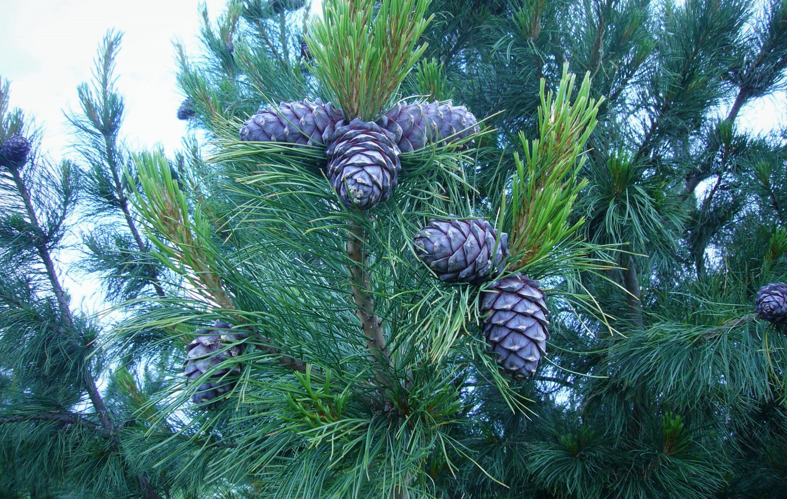

Родился и жил до 13 лет в г.Усть-Илимск Иркутской обл. Дубарь, много снега, комары, но не все так плохо. Вокруг тайга и река Ангара - это очень красиво!
Статейка в википедии про Усть-Илимск
Картинка с абсолютной ссылкой
Еще прикольный момент был в том, что там ростут кедры. Подойдешь, пнешь по стволу дерева, а кедровая шишка тебе по башке. Потом сидишь, выколупливаешь орехи, весь липкий и в смоле! Мама постоянно ругалась))))
Картинка с относительной ссылкой
Ну наверное самое яркое воспоминание - это Тихий океан Я в детстве часто бывал на Сахалине, там у меня целая куча родственников (17 двоюродных братьев и 4 сестры)

Но в общем и в целом всю свою жизнь я валял дурака, и единственное что у меня хорошо получилось - это создать семью (любимая жена, дочка и сын)
Я уже 12 лет с хвостиком гну спину на заводе (задолбался уже) + сдавал квартиру. Денег вроде хватало, но пандемия изменила жизнь очень многих людей. Я прилично потерял в доходах и надо было что-то делать. Знакомый чел предложил начать изучать программирование и выбор пал на Python. Самостоятельно проучился почти год, но перегорел. Затем купил курсы настройки контекстной рекламы, но клиентов так и не нашел. Точнее нашел, но у них нет денег на рекламу, а значит у меня нет хорошего портфолио
И вот спустя год я вновь решил изучить сферу IT и тут попалась реклама GeekBrains. И если честно мне зашло. Я поступил на 2 специальности программист и продакт-менеджер и все свободное время занимаюсь учебой!